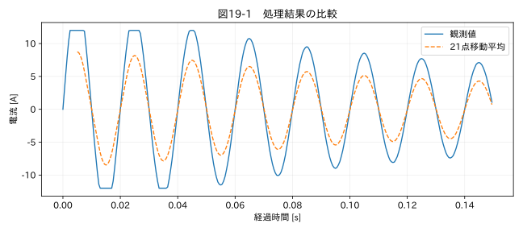

第V部 複数データの統合と品質管理 / 第19章
この章の節
クリーニング前後の差異を検証する
学習目標
平均、標準偏差、ピーク、周波数、対応時刻の変化を評価し、処理の受け入れ条件を定める。観測母集団が変わった比較を見抜く。
19.1 きれいなグラフは合格条件ではない
起動電流を移動平均すると、波形は滑らかになり、標準偏差も小さくなる。しかし起動ピークや50 Hz成分が減っていれば、電流評価に使うべきデータではなくなる。処理の目的と、変えてよい特徴・変えてはいけない特徴を先に定める。
本章では21点の中央移動平均を電流教材へ適用し、前後の統計を比較する。これは不適切な平滑化の影響を観察するための実験であり、推奨する電流クリーニングではない。2000 Hzで21点は約10.5 msの窓に相当し、50 Hz波形の20 ms周期に対して無視できない。
19.2 同じ対象点で比較する
欠損を埋めると、処理後の平均には処理前になかった時刻が加わる。平均差には、値の修正と比較母集団の変化の両方が入る。そのため、全有効値による前後統計と、両方に値がある共通時刻だけの差を分ける。
本書の compare() はbeforeとafterの件数、平均、標本標準偏差、最小・最大、共通有効点数、共通点の最大絶対差、補間点数を返す。長さが違う配列は拒否する。リサンプリングで長さが変わった場合は、比較可能な時間領域と指標を別途定義する必要がある。
19.3 ピーク、RMS、面積
ピーク保持率を P = max|y| / max|x| と定義できる。分母が0なら未定義として別扱いにする。最大値の時刻差も重要であり、同じ高さでも遅れて現れれば制御や同期の評価は変わる。複数ピークがある場合は、全体の最大一点だけでなく、対応するイベントの局所ピークを比較する。
RMSは sqrt(mean(x²)) であり、交流成分の標準偏差とは異なる。直流成分がある場合、RMS²は平均²と母分散の和になる。エネルギーや負荷積分は、サンプル間隔が一定か、欠損をどう扱ったかによって変わる。面積が保たれてもピークが保たれるとは限らない。
19.4 分布と周波数を見る
ヒストグラムの裾が縮んだことは、ノイズを除いた結果かもしれないし、重要な極値を削った結果かもしれない。分位点、上下限超過時間、波形のイベント別分布を比べる。平均と標準偏差だけでは形の違いを十分に表現できない。
周波数の比較では、同じ長さ、窓関数、正規化、サンプル周期を使う。フィルタ後に特定の周波数帯が落ちるのは想定通りか、残すべき成分を消したのかを検討する。相関の上昇も、共通の平滑化が作った見かけの改善かもしれない。独立な検証用イベントを使う。
関連する詳細実験は実践補講に掲載。入力形式・同期・補間・校正・多変量・チャンク境界を扱う。
実行するコードと結果
run.py · 共通処理の全ソース
教材フォルダで python examples/chapter19/run.py を実行。以下は省略のないスクリプト。共通モジュールは教材一式に含む。
from pathlib import Path
import sys
ROOT=Path(__file__).resolve().parents[2]
sys.path.insert(0,str(ROOT))
sys.path.insert(0,str(ROOT/'examples'))
import numpy as np
import pandas as pd
from common import load,truth,seconds,plot
from tsclean.core import numeric,timestamps,time_flags,hampel,freeze_candidates,interpolate_short,compare
df=load('04_current');x=df['測定値'];y=x.rolling(21,center=True,min_periods=21).mean()
import json
print(json.dumps(compare(x,y),ensure_ascii=False,indent=2))
print('ピーク保持率:',y.abs().max()/x.abs().max())
plot(19,seconds(df)[:300],{'観測値':x[:300],'21点移動平均':y[:300]},'電流 [A]')
検証環境での実行結果を開く
{
"before": {
"n": 4000,
"mean": 0.015252405978357227,
"std_ddof1": 4.033581843425158,
"min": -12.0,
"max": 12.0
},
"after": {
"n": 3980,
"mean": 0.0015523392623631811,
"std_ddof1": 2.4265072285852867,
"min": -8.47524818139762,
"max": 8.749036680802286
},
"paired_n": 3980,
"paired_max_abs_change": 6.124009872592381,
"filled_n": 0
}
ピーク保持率: 0.7290863900668572

19.5 受け入れ条件の例
図19-1では、起動時の波形が明らかに変形する。受け入れ条件は処理後の図を見てから都合よく決めるのではなく、測定目的から事前に決める。
| 用途 | 評価する項目 | 例示する判断の方向 |
|---|---|---|
| 平均温度比較 | 共通区間平均差、補間割合 | 許容温度差に対する処理影響を抑える |
| 最大圧力評価 | ピーク値、ピーク時刻、飽和 | 未知ピークを含む区間は評価不能 |
| 振動モード確認 | 帯域振幅、位相、同期残差 | 注目帯域を減衰させない |
| 品質監査 | 変更件数、根拠、追跡可能性 | 未承認の変更をゼロにする |
「平均差1%以内」などの数値は、物理量や要求仕様によって意味が変わる。ゼロ近くの量では相対差が不安定なので、絶対差を使う。測定不確かさや設計余裕と比較して判断する。
演習
基礎演習
掲載出力から、移動平均後の有効点数とピーク保持率を読み取る。
応用演習
21点平均を5点平均へ変える。ピーク保持率だけでなく、50 Hz成分と端点欠損数を比較する。
実務演習
処理後の平均温度は変わらなかったが、最大値が4 °C下がった。平均温度による性能比較と最高温度による部品耐熱評価を、同じ結論にしてよいか。
演習解答・解説を表示する
基礎：完全窓を要求するため、最初と最後の10点ずつが未評価になり、4000点から3980点になる。ピークの比は掲載出力で確認する。
応用：窓が短くなれば変形は一般に小さくなるが、必要な許容誤差に入るかは別問題である。端点未評価は2点ずつになる。
実務：同じ結論にはできない。平均の保存だけでは最高温度が保存されていない。耐熱評価には原波形や検証済みの補正だけを使い、ピーク減衰の理由を調べる。
章末まとめ
クリーニングの検証は、エラーなく実行できたかでは終わらない。解析目的に必要な特徴が、許容範囲内で保たれているかを評価する。